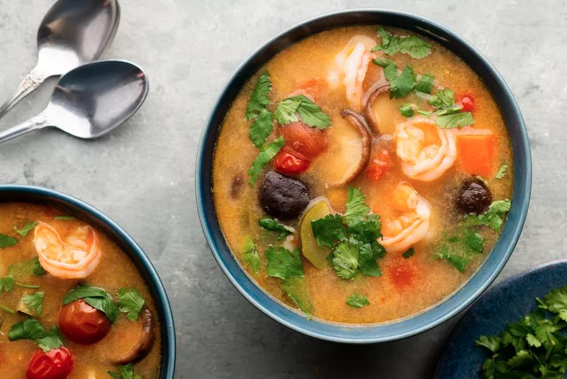

Tom Yum Soup

Description
At first sip of this Thai tom yum soup, you'll be overcome by the intoxicating flavors of lemongrass, garlic, lime, coconut milk, and chile combined with a chicken stock base and topped off with shrimp. If you like spice, we recommend either fresh red chiles or getting yourself a bottle of chile oil and adding anywhere from a few drops to a few teaspoons. Or leave the chile out for a terrific mild tom yum.
Ingredients
- 6 cups chicken stock
- 1 stalk lemongrass, lower third finely minced, top bulb smashed and bound with twine
- 1 carrot, thickly sliced
- 4 cloves garlic, minced
- 3 tablespoons minced onion
- 2 tablespoons grated galangal or ginger
- 3 makrut lime leaves (or bay leaves and long strip of lime zest)
- 1 1/2 tablespoons plus 1 teaspoon fish sauce, divided
- 1/2 tablespoon soy sauce
- 1 teaspoon lime juice or lemon juice
- 1 to 2 cups shiitake mushrooms, stems removed
- 1 small zucchini, sliced into half-moons
- 12 to 14 medium raw shrimp (or 8 to 10 large), shells left on or removed
- 1 cup cherry tomatoes, sliced in half
- 1/4 to 1/3 (13.5-ounce) can coconut milk
- 1 teaspoon chili oil, optional
- Brown sugar, to taste, optional
- Crushed chile pepper flakes, to taste, optional
- 1/3 cup fresh cilantro (fresh coriander)
Steps
- Gather the ingredients.
- Pour the stock into a deep cooking pot over medium-high heat. Add the prepared lemongrass, including the upper sections of the stalk you didn't mince. Boil 5 to 6 minutes to soften.
- Add carrot, garlic, onion, galangal or ginger, lime leaves, 1 1/2 tablespoons of the fish sauce, soy sauce, and lime juice. Reduce heat slightly, cover, and continue simmering 5 minutes. Add the mushrooms and zucchini, and continue simmering another 5 minutes.
- Add shrimp and cherry tomatoes. Cook 3 minutes or until shrimp are pink and plump.
- Turn down the heat to low and add 1/4 can coconut milk, chile oil, and brown sugar and red pepper flakes to taste (if using). Add the remaining teaspoon of fish sauce or more chile oil to taste. Discard the lime or bay leaves and the zest, if using. Serve with fresh cilantro sprinkled over and enjoy.
Back to Odin Recipes